Pulsa en cualquier lugar o presiona Esc para cerrar
Impacto deportivo y financiero de los abandonos en la Fórmula 1: roturas mecánicas vs. accidentes
La Fórmula 1 no solo reparte trofeos: reparte más de 1.100 M€ en premios por estricto orden de puntos.
La tasa de abandono mecánico se ha desplomado de forma continua en los últimos 34 años.
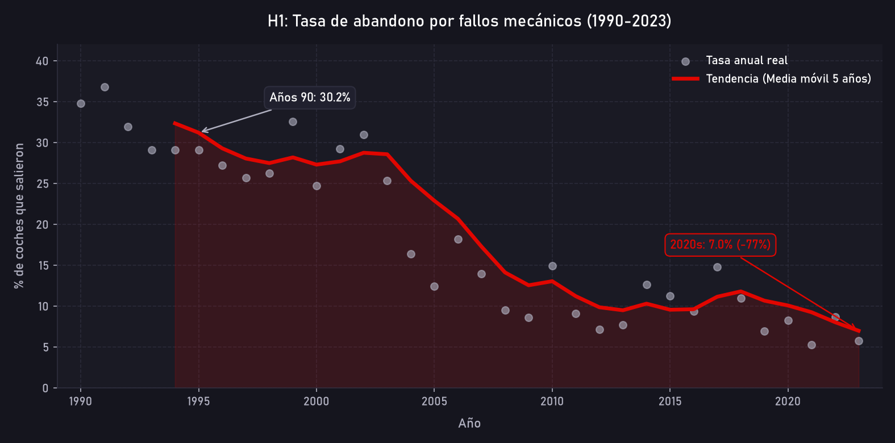
Los accidentes no han aumentado: hoy pesan lo mismo porque los fallos mecánicos han desaparecido.
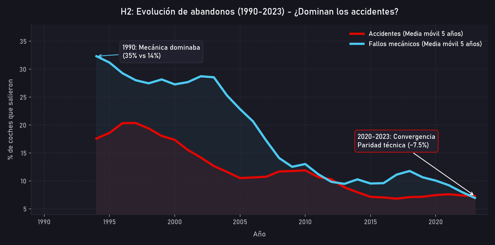
Los accidentes en 2023 se repartieron entre todas las escuderías de forma indistinguible del azar.
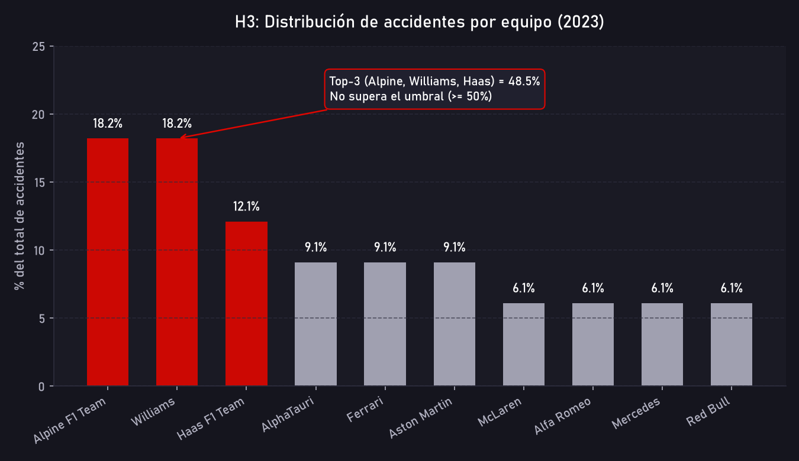
El peligro no es el escudo del coche, es dónde sales: salir atrás multiplica el riesgo por 1.52x.
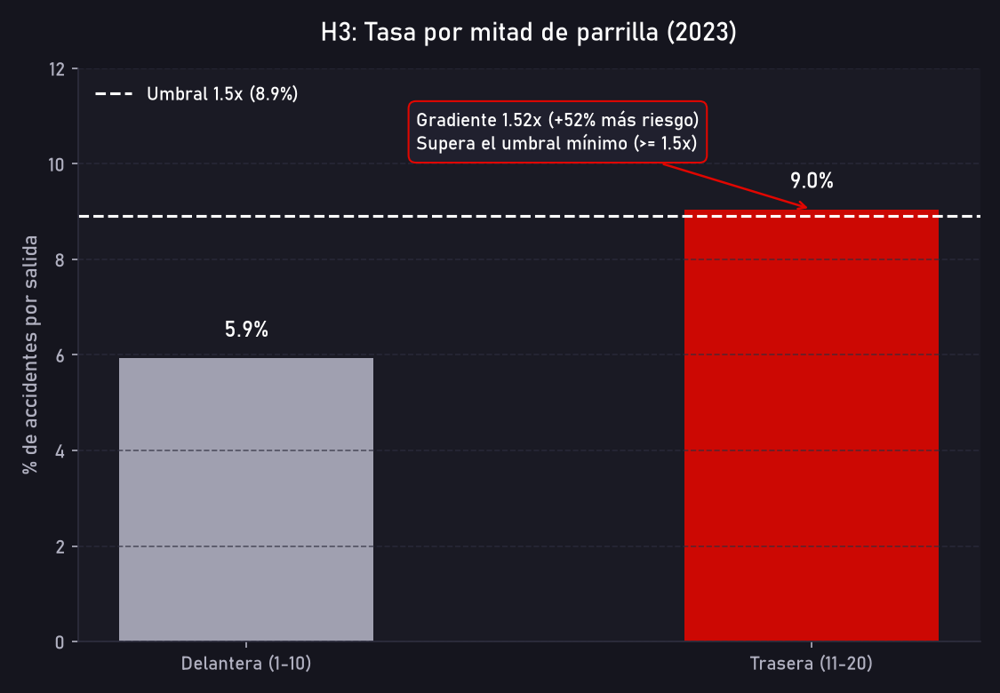
Análisis contrafactual vuelta a vuelta: reconstruyendo qué posición ocupaba el piloto al abandonar.
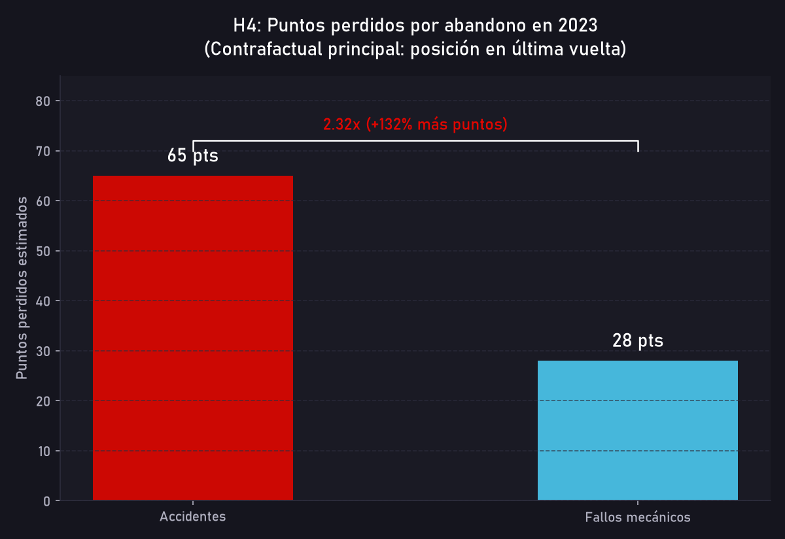
Los puntos perdidos no son abstractos: en 2023 decidieron el subcampeonato mundial y empates millonarios.
En la era del límite presupuestario (Cost Cap), el accidente te castiga dos veces.
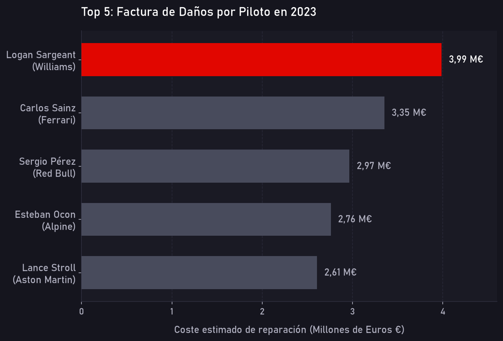
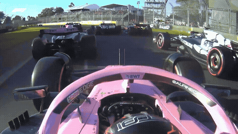
Dos escalas de análisis: la evolución histórica de la fiabilidad (1990–2023) y el impacto financiero en 2023.
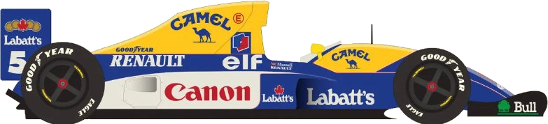
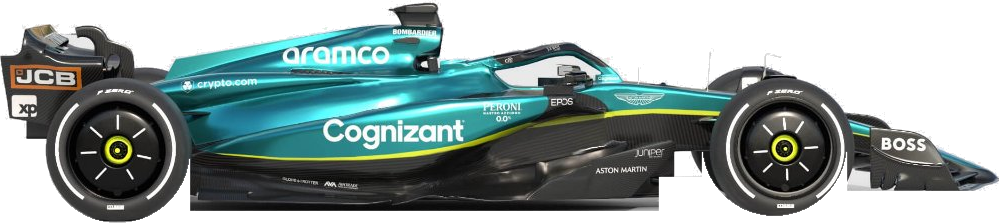
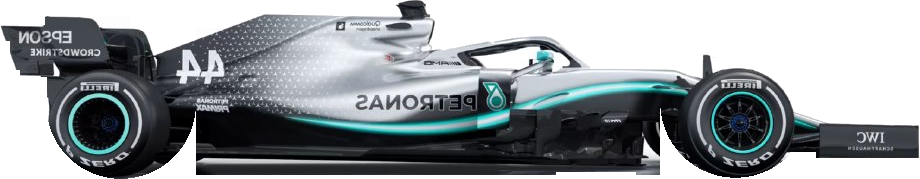
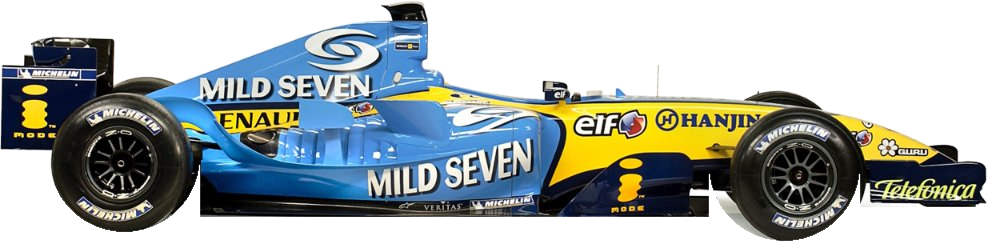
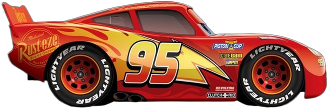